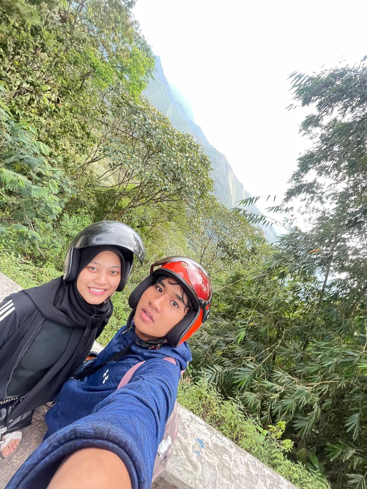

Sumpah Disini Canggung banget masih jaim jaim dan waktu saya senang banget bisa ajak kamu keluar pertama kali setelah kamu jelasin chat kamu panjang lebar kalau kamu suka aku wkwk 🥰🥰
Buka Puasa Bersama pertama kali sekaligus jalan pertama
Waktu disini aku pertam kali bahagia karena first time aku dekat sama cewek dan sekaligus kamu pacar pertama aku selama aku hidup, Semoga langgeng terus yahh bubub T_T.
Selfie Setelah Nonton The Architecture of Love
Disini waktu sampai diparkiran rasanya senang banget waktu habis nembak kamu dan accept aku waktu nonton di bioskop 🎥🎥🎥🎥,
aku ingat banget 8 Mei 2024 Mall Marina Surabaya Selatan.
Selfie 0.5 di parkiran
Disini kita berangkatnya pagi banget habis Shubuhan, Sumpah disini dapat pengalaman lucu banget :v , kita juga sebelum ke Selecta kita ke permadian air panas di Cangar🏞️ dan alun alun.
Disini kita melarikan diri dari Surabaya yang sangat panas ☀️ dan ingin mencari udara dingin ❄️ di Batu.
Jalan–jalan ke Selecta dan Batu pertama kali berdua

Disini pergi penuh perjuangan karena nanjaknya curam 🧗‍♂️⛰ banget. Aku lihat ada orang pacaran lain juga motornya nggak bisa naik, jadi kita dorong bareng.
Gunungnya keren banget pemandangannya 🏞️, tapi sekarang sedikit takut lewat situ karena longsor.
Pulang–Pergi lewat Cangar
Film ini sangat nyerang psikis banget. Aku tutup mata karena takut jumpscare 👻👻 wkwkw. 8.5 dari 10 untuk nilainya HAHAHA.
Disini kita selfie pakai kacamata khusus.
Nobar di Aula Asrama nonton Medium/Horror Thailand
Aku panik karena kamu bilang mama sama ayahmu sudah tahu kalau kita pacaran. Tapi senang dapat nomor ibumu, jadi lebih dekat dengan keluargamu ❤️❤️❤️
Temanin BUBUB nyari buku di Gramedia